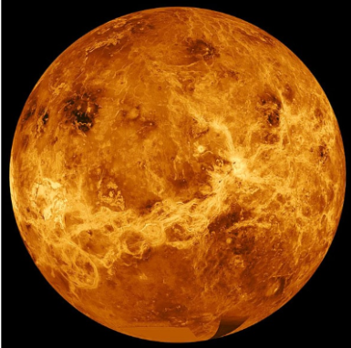

A continuación de Mercurio encontramos a Venus. Es el que mas se parece a la Tierra. Está cubierto de nubes muy espesas que reflejan la luz solar, de modo que por la noche se ve brillante y podemos distinguirlo a simple vista.
Su nombre es honor a Venus, diosa romana del amor.
